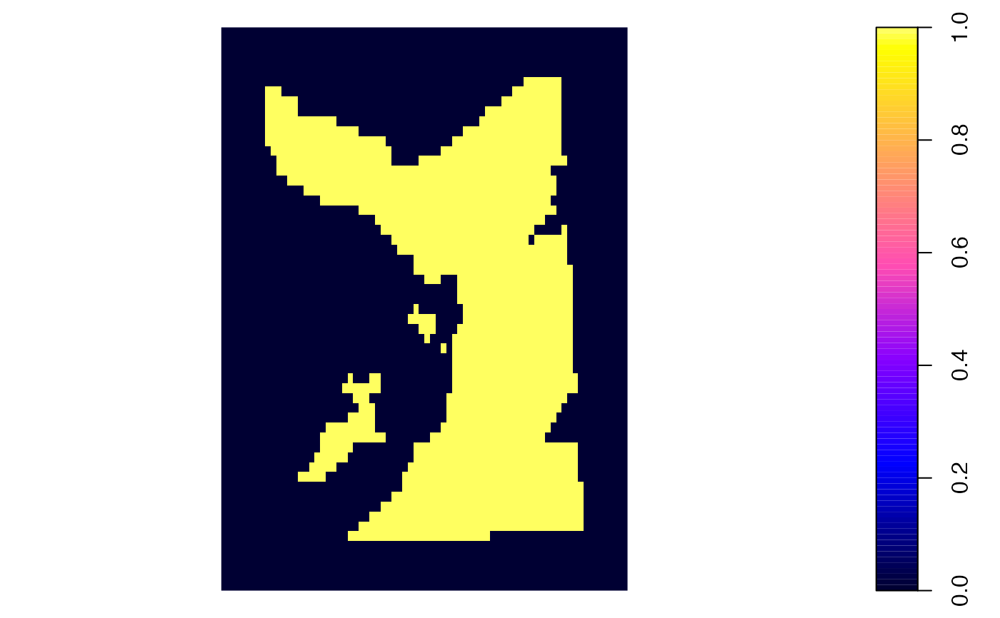

This function defines a `habitat' grid for kernel smoothing (e.g., via kud_around_coastline).
kud_habitat(map, mask = map, mask_inside = FALSE, plot = TRUE, ...)A raster that defines grid properties.
Mask options passed to mask_io.
A logical input that defines whether or not to plot the habitat grid, alongside any additional arguments passed to plot.SpatialPixelsDataFrame.
The function returns a SpatialPixelsDataFrame object that defines `habitat' (1) versus `non-habitat' (0).
kud_habitat(map = dat_gebco, mask_inside = FALSE)

#> Object of class "SpatialPixelsDataFrame" (package sp):
#>
#> Grid parameters:
#> cellcentre.offset cellsize cells.dim
#> s1 695620.6 257 74
#> s2 6246888.4 463 57
#>
#> Variables measured:
#> layer
#> 1 0
#> 2 0
#> 3 0
#> 4 0
#> 5 0
#> 6 0
#> ...
#>
kud_habitat(map = dat_gebco, mask = dat_coast, mask_inside = TRUE)
#> Warning: GEOS support is provided by the sf and terra packages among others
#> Object of class "SpatialPixelsDataFrame" (package sp):
#>
#> Grid parameters:
#> cellcentre.offset cellsize cells.dim
#> s1 695620.6 257 74
#> s2 6246888.4 463 57
#>
#> Variables measured:
#> layer
#> 1 1
#> 2 1
#> 3 1
#> 4 1
#> 5 1
#> 6 1
#> ...
#>